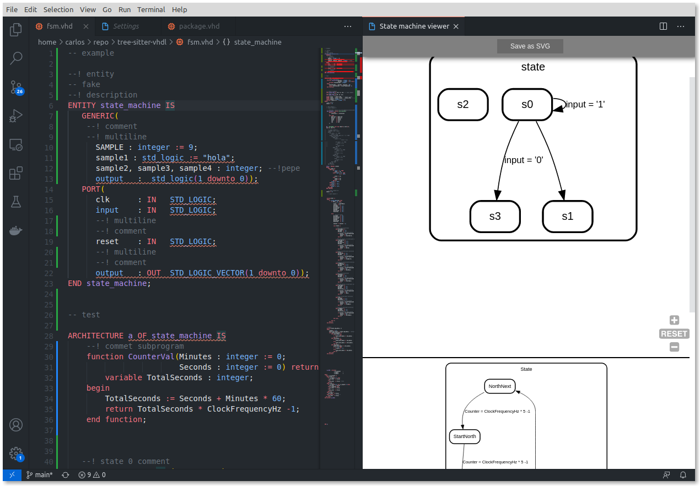

Release notes 0.1.0
State machine viewer VHDL
Extract the state machines from code.

State machine designer VHDL/Verilog
Design your state machine and conver it to code.

New documentation VHDL/Verilog
Now the Documeter supports:
- Constants.
- Signals.
- Instanciations.
- State machines.
- And more...

Bugs fixed
- Python3 path can be cofigured.
- Vivado linter bug.
- Minor bugs.
And more...